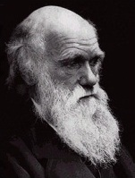

1842’de Charles Darwin (1809-1882), Türlerin Kökeni’ni yazmaya başladı. Popülasyonların zaman içerisinde evrildiğini iddia eden ilk kişi değildi, ama bunun neden olduğunu anlatan bir kuramı sunan ilk kişiydi.
İngiltere’nin Shropshire kentinde varlıklı eşraf bir ailede doğan Darwin, ayrıcalıklı bir çocukluk yaşadı. Babası, seçkin bir doktordu ve annesi ünlü çömlekçi Josiah Wedgwood’un kızıydı. Zor beğenen bir doğaya sahip olan Darwin, bir doktor olan babasının izinden gidemedi. Babası onun bir mesleğe sahip olmasını istedi, o nedenle onu rahipler okuluna yolladı. Darwin’in doğal gözlem, anatomi, jeoloji ve botanik bilime meyli vardı, ama dinle o kadar da ilgili değildi. Cambridge’te Christ Kilisesi’nde ilahiyat çalışarak geçirdiği üç yıldan sonra Darwin, kiliseden ayrılma fırsatını yakaladı. Yirmi iki yaşında, denizde tek başına dümene geçmekten korkan asilzade kaptan Robert FitzRoy için çoğunlukla kibar bir yol arkadaşı olarak yardımcı olmak üzere HMS Beagle gemisiyle yola çıktı.

Sonraki beş yılda Darwin, Güney Pasifik, Güney Amerika ve Avustralya’nın adalarının çevresinde yelkenli gemiyle dolaştı. Bitkiler ve hayvanlara dair gözlemleri, en göze çarpanı Galapagos Adaları’nın eşine az ratlanır yaratıkları, evrim kuramı için temel oldu. Hayvanların çevrelerine nasıl uymaya çalıştıklarını fark etti. Uzun, dar gagalı bir kuş, uzun, dar çiçekli bir bitkiden bal özünü azar azar çekiyordu. Bunun şans eseri olmadığı sonucuna vardı. En uzun, en dar gagalı kuşlar, hayatta kalabilmede en fazla şansa sahip olabilirlerdi ve bu nedenle fiziksel niteliklerini sonraki nesle iletebilirlerdi. Böylece kuşlar, zaman içinde çiçeklere uyum sağlamak için evrildi. Kısa, şişman gagalı kuşlar ölüp gitmişlerdi. Bu doğal seçilim süreci, yeryüzündeki tüm yaratıkların özelliklerini açıklamak üzere kullanılabilirdi. Su yosunundan mavi balinalara tüm toplulukların “en uyumlunun hayatta kalması” ilkesiyle evrildiği sonucuna vardı.
EK BİLGİLER:
1. Darwin, yirmi yıldan daha fazla bir zaman bulgularını halka ifşa etmedi. Din üzerinde yapabileceği etkiye dair ciddi kuşkular taşıyordu.
2. Türlerin Kökeni, 1859’da nihayet basıldığında çok satan bir kitap oldu.
3. Darwin, kitabın çıkmasından sonra kuvvetten düşüren hastalıklarla kıvrandı. Bilime son derece kararlı şekilde inanmasına rağmen, boynunu sirke ile ıslatma, boynunu bir zincirle bağlama gibi batıl yöntemleri de denedi.